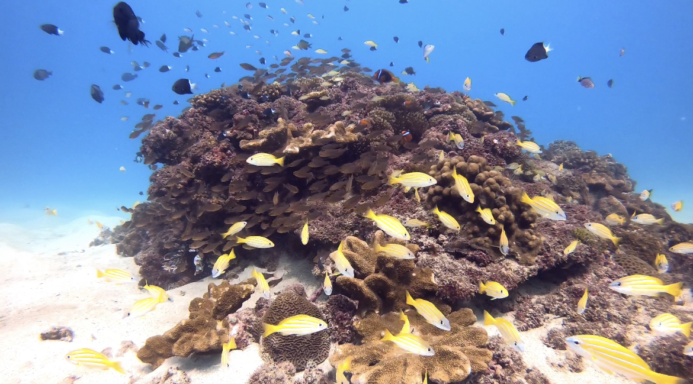
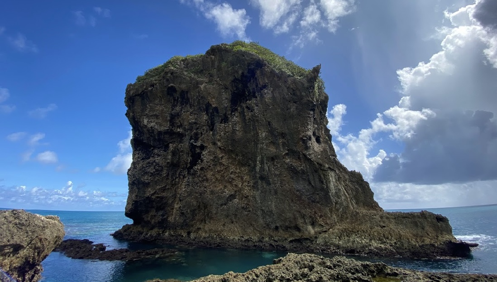
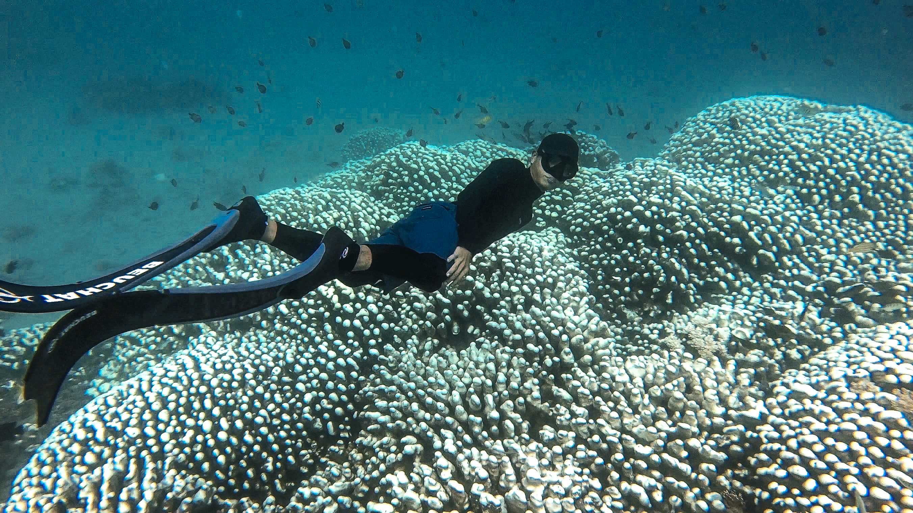
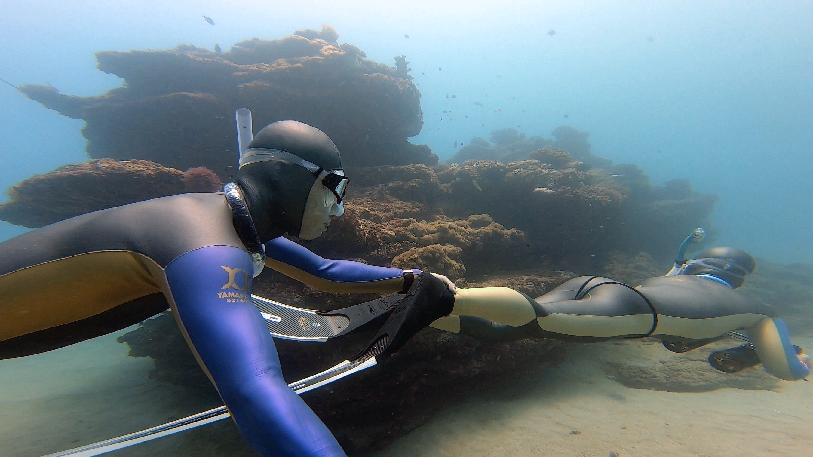
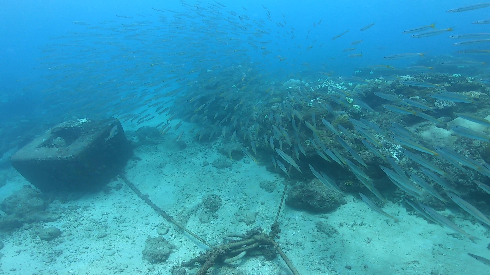
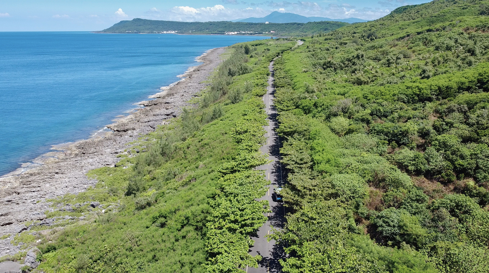
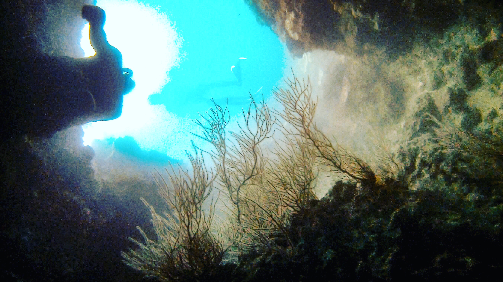

Fundive 墾丁導潛
來墾丁潛水都是差不多的潛點嗎？
找我們就對了！
- 潛點依當日海況做決定 -
導潛時間
約2小時
費用
$ 1000 / 人
費用包含 ( 3人同行1人免費 )
- 潛點導航、介紹
- 浮球架設
- Gopro側拍
- 保險
參加條件
- 不限系統有上過自潛課程皆可
- 需年滿18歲以上 (16-17歲需監護人同意證明)
-
身心健康、無心血管、呼吸道疾病。
若有重大疾病者、需由醫生簽署同意證明。
潛點介紹

萬里桐 - 海扇走廊
深度： 12～16米
特色：距離岸邊大約250M，常有海流，
一排大海扇。
難度：⭐️⭐️⭐️⭐️⭐️

砂島
深度： 7～12米
特色：一望無際的沙地，豐富的獨立礁生態。
難度：⭐️⭐️

船舤石
深度： 5～10米
特色：沙地常有土魟出沒。
難度：⭐️

餵魚區 - 雀屏珊瑚
深度： 9～12米
特色：珊瑚覆蓋率高，常有牛港鰺出沒。
難度：⭐️⭐️⭐️

艷光礁
深度： 8～15米
特色：生態豐富的獨立礁。
難度：⭐️⭐️⭐️⭐️

出水口右側
深度： 8～12米
特色：常有梭魚群出沒，沿岸有玫瑰珊瑚。
難度：⭐️⭐️

合界
深度： 10～30米
特色：沿岸有很多礁石生態，外面有合界排骨
(沈船的主結構，約32米)。
難度：⭐️⭐️⭐️⭐️⭐️⭐️

下水堀藍洞
深度： 10～15米
特色：有海扇跟海鞭，附近有很多洞可以鑽。
難度：⭐️⭐️⭐️